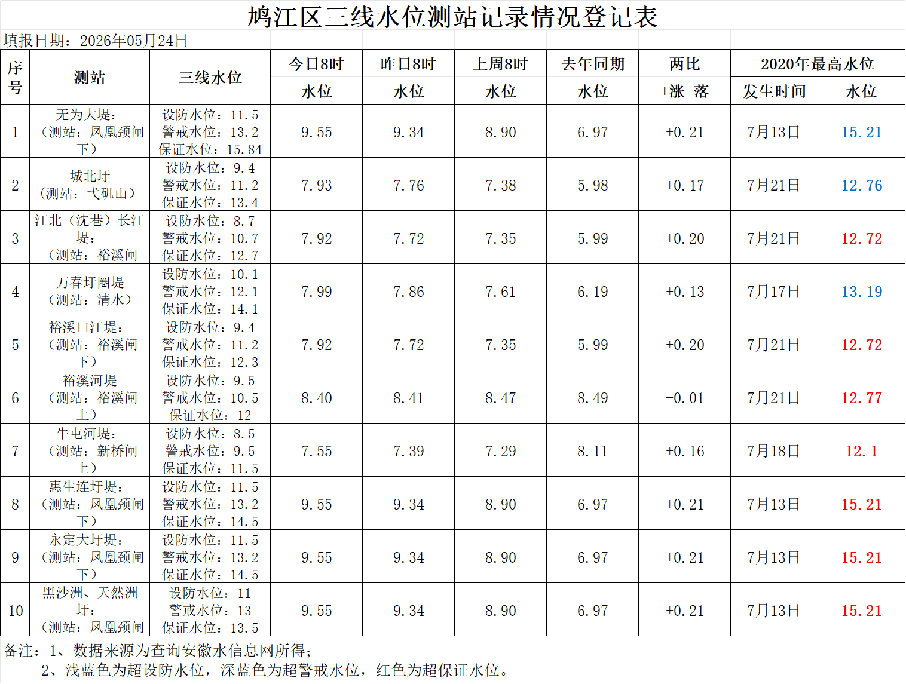

| 序号 | 站名 | 更新时间 | 当前水位 | 昨日同期水位 | 较昨日同期水位+涨-落 |
|---|---|---|---|---|---|
| 1 | 📍无为大堤 | 2026-05-24 12:00:00 | 9.12 m | 9.09 m |
持平
|
| 2 | 📍无为大堤 | 2026-05-24 12:00:00 | 9.12 m | 9.09 m |
↑ +0.27m
|
| 3 | 📍无为大堤 | 2026-05-24 12:00:00 | 9.12 m | 9.09 m |
↓ -0.21m
|
| 4 | 📍无为大堤 | 2026-05-24 12:00:00 | 9.12 m | 9.09 m | 持平 |